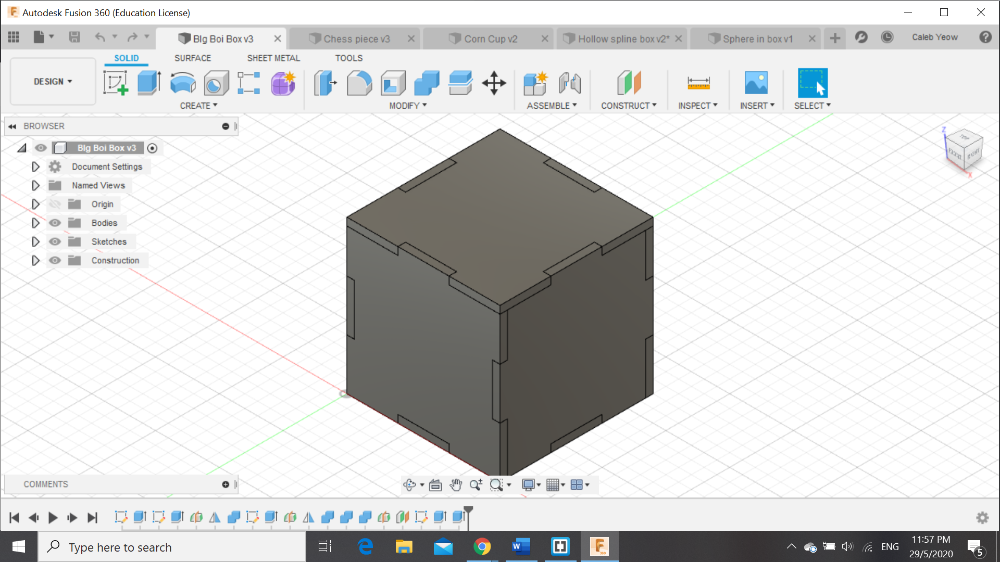
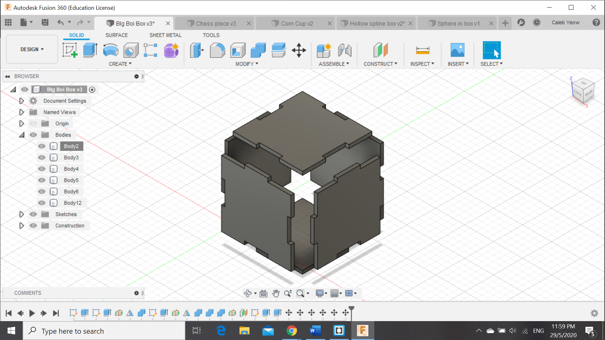

Home page
Computer Aided design
For Computer Aided Design, we learnt how to use how to use GIMP to edit photos, to edit the resolution so that its easier for the drawing on 2D and 3D CAD Insert Image For GIMP here
For 3D CAD, we used Autodesk Fusion 360, learning how to draw various interesting designs, such as a corn cup, a split box and many more...
Sphere in cube

For this drawing, Firstly, i created a square base and extruded it by its length/height, producing a perfect cube. Next, I shelled the cube to obtain a hollow cube with a thin thickness. Following that, drawed a cicle on each of the middle sides for each of the axis,meaning that i had to draw a cicle on the middle on each side. Afterwards, I extruded into the cube to produce holes at the sides such that it forms holes in the sides of the cubes, as seen in the image above. Afterwards i offset a plane into the middle of the cube and created a sketch of a semi-circle,relvolving atferwards to produce a sphere, thus finishing the object.
Corn Cup

For this drawing, I had to create a base circle, afterwards i created many offset planes within the same axis and then create a loft. Afterwards, i used the shell function at the top of the cup to make the cup hollow and therefore forming a proper corn cup. An alternative method is to start a sktech on the y axis of the object, creating the side profile of the vase shape with a middle line beside it. Afterwards, revolve the sketch with the middle line as the axis, producing the same object.
Chess Piece

For the chess piece, I had to create the a sketch, import a image from the internet and insert it into the sketch as a canvas, as well as to create a half profile from the canvas as a close reference, using mainly the spline for the intricate curves of the base to the top without including a the cross of the king piece and a middle line . Next up, revolve the sketch to form a proper chestpiece without the cross at the top. Lastly for the cross, its really simple, i firstly had create a sketch from the same axis use to create the sketch for the base piece and draw a thin cross,and afterwards extrude the cross and therefore producing a proper king chess piece.
Split Box

Firstly, i had to create a sketch at the base, make a rectangle and extrude the rectangle to get a cuboid,shelling it to get a hollow box. Next, i created a sketch on the side of the box, make a spline from 1 end of the box to the other end on the sketch. the i used the split function to produce the image u see on the screen,making 2 different bodies.
Box With Connectors
 To be finished on30th may